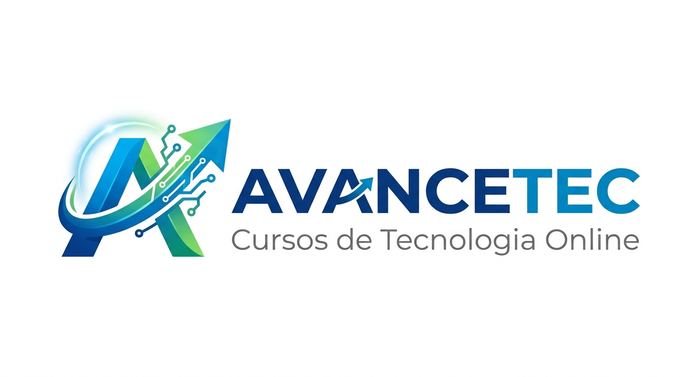

AvanceTec
CURSOS DE TECNOLOGIA PARA ALAVANCAR SUA CARREIRA
Sobre a Plataforma AvanceTec
A AvanceTec é uma plataforma inovadora de educação em tecnologia, dedicada a transformar carreiras e abrir novas oportunidades no mercado digital. Os cursos da AvanceTec são destinados às pessoas que querem se desenvolver na área de tecnologia, desde iniciantes até profissionais experientes que buscam se atualizar com as tendências mais recentes do setor.
Nossa missão é oferecer uma educação de qualidade, acessível e prática, que prepare nossos alunos para os desafios reais do mercado de trabalho. Contamos com diversos cursos com certificado, preparados e estruturados por profissionais experientes que atuam nas principais empresas de tecnologia.
Além de termos suporte dedicado para as dúvidas dos alunos, oferecemos uma experiência de aprendizado completa e prática que irá impulsionar sua carreira para o próximo nível. Nossa plataforma combina vídeo-aulas interativas, exercícios práticos, projetos reais e comunidade de alunos para garantir o melhor aprendizado.
Na AvanceTec, acreditamos que a educação é a chave para o sucesso na era digital. Por isso, estamos comprometidos em fornecer recursos de alta qualidade e suporte contínuo para ajudar nossos alunos a alcançar seus objetivos profissionais e se destacar no mercado de trabalho.
A AvanceTec oferece
- Cursos com Certificado Reconhecido
- Suporte ao Aluno 24/7
- Conteúdo Sempre Atualizado
- Instrutores Experientes da Indústria
- Projetos Práticos do Mundo Real
- Comunidade Ativa de Aprendizado